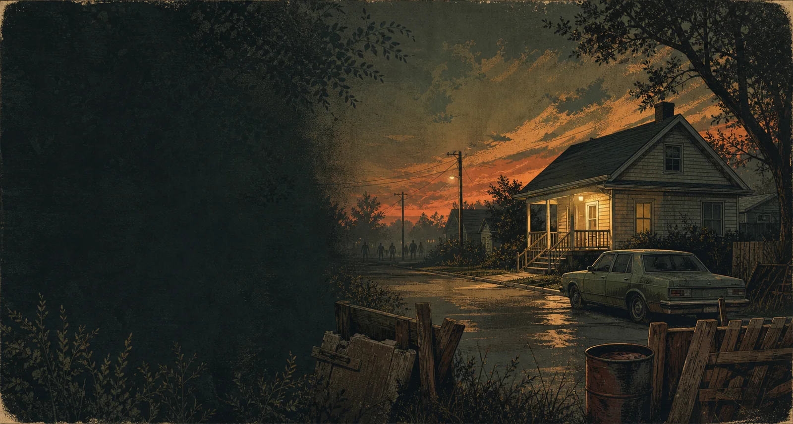
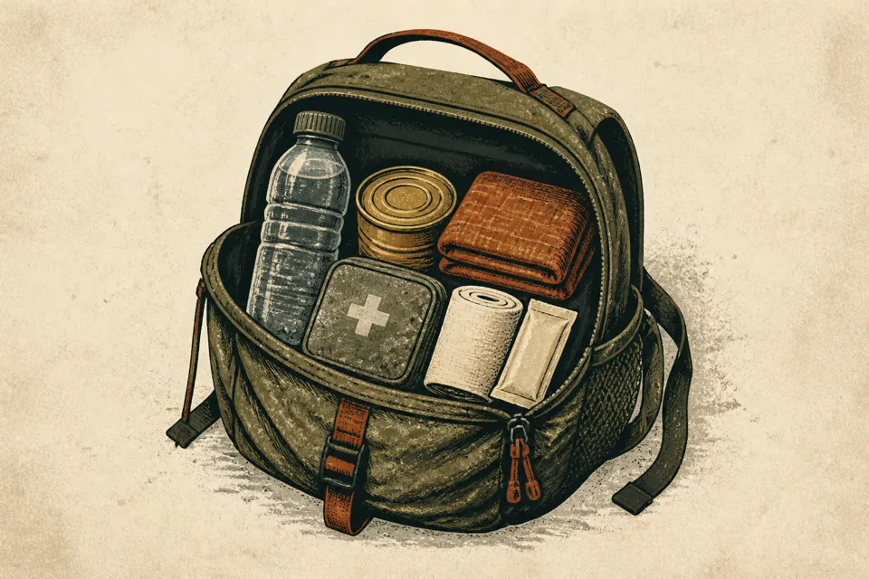
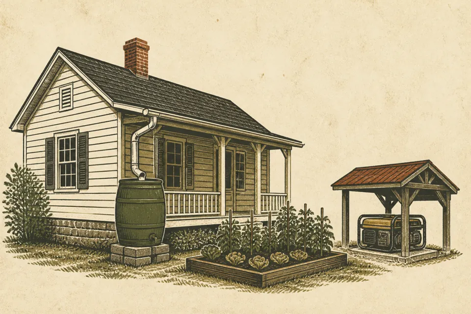
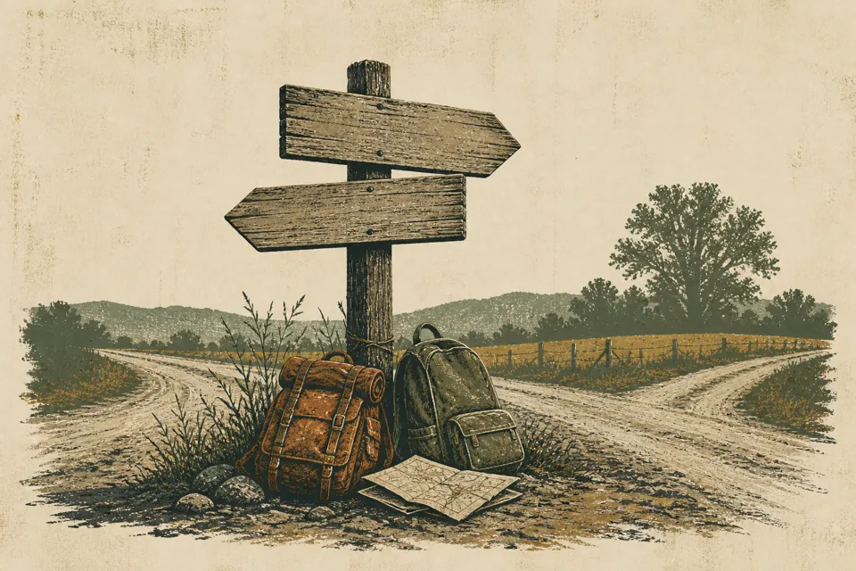

Leia o volume certo
O livro não dá XP nem nível. Ele multiplica o XP ganho depois, dentro da faixa indicada na capa.

Guia prático para gente viva
O básico do Zombas para você não morrer por falta de informação. Morrer por excesso de confiança continua sendo uma possibilidade bem real.
Como conectar
Assine a coleção antes de entrar ou deixe o jogo baixar os mods na primeira conexão. Na primeira vez pode demorar; é download, não necessariamente travamento.
Antes de virar estatística
Não tente resolver Kentucky no primeiro dia. Localize-se, avise ao grupo onde nasceu e separe água, comida, curativo, mochila e uma arma simples.

This Is Your Life usa K para abrir o diário de vida do personagem. True Smoking usa a mesma tecla para dar um trago no cigarro aceso. Quando as duas ações ficam em K, uma pode atrapalhar a outra. Se o personagem fuma, vale resolver isso antes de o caos começar. E ele começa cedo.
Leia primeiro, faça besteira depois
Habilidades representam o que seu personagem sabe fazer. Quase todas vão do nível 0 ao 10 e sobem com XP. Livros, televisão e VHS aceleram o aprendizado de maneiras diferentes; nenhum deles instala conhecimento por osmose.
O livro não dá XP nem nível. Ele multiplica o XP ganho depois, dentro da faixa indicada na capa.
Depois de ler, cozinhe, desmonte, conserte ou construa. A teoria prepara; a prática move a barra.
Cada volume cobre dois níveis. Volume I prepara 1 e 2; II prepara 3 e 4; e assim até o Volume V.
Televisão
Alguns programas dão XP ou receitas, mas passam em horários definidos e dependem de energia. É televisão dos anos 90: perdeu o horário, perdeu o programa ao vivo.
VHS
Fitas podem ensinar habilidades ou receitas numa televisão com aparelho de VHS. O Obvious Skill Tapes marca em verde as que realmente ensinam algo.
Controle de distância
Combate seguro depende de espaço, visão do entorno e uma rota para recuar. Se a luta não deixa saída, ela já começou mal, mesmo que a música imaginária esteja épica.
Abra espaço, derrube e só ataque no chão quando o entorno estiver limpo.
Reposicione antes de bater. Ataque vindo das costas é especialmente perigoso.
Golpear prende seu movimento por um instante. Esse instante é suficiente para o segundo zumbi chegar.
Multi-hit ajuda contra um grupo pequeno. Não transforma seu personagem em John Wick.
Agachar reduz sua presença, e escolher bem a rota evita muita luta desnecessária. Aqui também dá para deitar, o que melhora a pontaria. Armas de fogo continuam anunciando sua localização para o bairro inteiro.
Zumbis atraídos por barulho podem levar algum tempo para chegar. Depois de atirar ou disparar um alarme, observe o entorno e planeje a saída antes de continuar saqueando.
O mapa não fica mais simpático
A cidade já começa perigosa e a população de zumbis cresce até o pico do dia 35. Uma rua limpa na semana passada não ganhou escritura de zona segura.
A maioria é lenta ou rápida sem correr. Uma pequena chance de sprinter significa que toda aglomeração pode esconder alguém que fecha distância de verdade.
Loot é escasso. Horta, animais e estoque devem ser organizados cedo, porque a produção leva tempo e precisa continuar depois que os alimentos encontrados acabarem.
Armas de fogo aparecem com mais facilidade que munição. Confira o calibre e o estoque antes de depender de uma arma.
O mod adiciona sobreviventes, inclusive grupos hostis. As regras de safehouse protegem contra outros jogadores, mas não há validação em jogo suficiente para prometer a mesma proteção contra NPCs. Guarde os itens mais importantes em mais de um lugar e trate qualquer encontro com sobreviventes como um risco.
Água e energia
Recuperação parcial de progressão
O Bound Journal é uma recuperação parcial da progressão, não apaga uma morte. Ele registra XP e receitas elegíveis no momento da transcrição, mas não devolve equipamento nem busca o corpo do personagem anterior.
O personagem novo recupera metade do XP elegível que estava gravado no diário. Isso não significa metade do número do nível: cada nível custa uma quantidade diferente de XP, então o resultado pode parar no meio de uma barra. Antes de 26/08 a taxa era 100%; caiu para 50% para que a morte continue custando progresso de verdade.
1. FabriqueUse um caderno, diário ou bloco de notas, cola, três tiras de couro e uma linha. Barbante ou linha de pesca também servem. A receita aparece como Vincular diário.
2. TranscrevaCom o item em mãos, use Transcribe Into Journal. Atualize depois de ganhar perícias importantes; diário desatualizado recupera progresso desatualizado.
3. RecupereDepois de morrer, encontre o diário no corpo anterior ou no lugar onde o guardou e leia com o personagem novo.
Preparação da base
Base boa é fácil de abastecer, defender e abandonar quando tudo dá errado. Escolha uma residência perto das áreas usadas pelo grupo e com mais de uma saída.

Datas aproximadas da campanha
A intermitência é aviso, não calendário exato. Tenha água guardada, captação de chuva e uma alternativa para cozinhar. O gerador fica do lado de fora, bebe combustível e não produz água por força de vontade.
Carrinho de mão ou de supermercado reduz o peso carregado em mudanças e saques. Carros em boas condições são raros; avise antes de usar um veículo que outra pessoa deixou na base.
Sistema de cozinha
Cozinhar começa com uma base, ingredientes e a fonte de calor correta. Os mods ampliam as receitas e organizam o processo, mas não revogam utensílio, skill, calor nem tempo. O painel ajuda; ele não cozinha por você.
Ele reúne receitas, ingredientes próximos e requisitos num painel. É organização, não passe livre culinário.
Ele acrescenta uma variedade enorme de alimentos e receitas. Se não souber o uso de um item, comece pelo painel.
Uso e manutenção
Veículos encurtam viagens e carregam muitos suprimentos, mas aparecem pouco, costumam ter pouca gasolina e pedem manutenção. Trate carro como recurso raro, não como kart descartável.
Veja combustível, bateria, condição do motor e avisos. O Realistic Dashboard faz o painel deixar de ser decoração.
Ela pode estar no veículo, por perto ou com um antigo dono. Hotwire só funciona quando o personagem cumpre os requisitos do jogo.
Abra a mecânica do veículo. Pneu, freio, suspensão, bateria e motor ruins mudam o risco da viagem.
Colisão estraga carro e personagem. Sair cedo demais de um veículo em movimento também pode causar dano.
Nos carroso tanque inicial está baixo. Olhe antes de planejar a viagem.
Nos postosas bombas têm estoque limitado e algumas já podem estar vazias.
Sem energiaa bomba não funciona. Um gerador do lado de fora pode alimentar o posto. É o mesmo recurso que também pode fazer falta na sua base.
No longo prazoPeachey's Biofuel permite produzir e refinar biocombustível, mas exige uma cadeia de produção.
Organização do grupo
O painel de usuário, chamado User Panel no jogo, concentra facção e safehouse. O botão fica na barra ao lado dos itens equipados, no canto inferior da tela. Não é intuitivo, por isso está escrito aqui.

Não pegue coisas da base dos outros sem combinar. Avise se levar carro. Fale antes de mexer em gerador, plantação ou estoque coletivo.
Ler as regras completas do servidorDescoberta, não decoreba
A lista completa de mods está em outra página. Aqui só entra o que muda como você joga de um jeito que ninguém espera na primeira vez que esbarra nisso.
Gazua. Serve para tentar abrir portas e veículos trancados no minigame de pinos. Para fazer a versão artesanal, aprenda Fazer Gazua Artesanal, tenha uma chave de fenda e gaste um clipe de papel. Ladrão começa com essa receita; os demais a aprendem na Lockpicking Magazine. Com a gazua no inventário, clique com o botão direito no alvo e escolha a opção de arrombamento. Em Arrombamento nível 0, a artesanal tem 50% de chance de quebrar a cada pino errado. A chance cai cinco pontos por nível, até o mínimo de 5%. Quando ela quebra, a sequência de pinos recomeça; uma falha também faz barulho. Gazua de janela está desativada no Zombas.
Pé-de-cabra. O Common Sense aceita o comum ou o forjado. Com ele no inventário, use a ação de forçar em portas comuns, janelas, portões de garagem ou portas de veículo. Força maior melhora a chance de sucesso. A tentativa faz barulho e cansa o personagem; nas janelas há 20% de chance de quebrar o vidro. No Common Sense, portas reforçadas estão bloqueadas no Zombas. O Neat Lockpicking pode mostrar uma ação separada de pé-de-cabra para elas, mas esse caminho ainda não foi validado em jogo no servidor. Não o trate como entrada garantida.
Costura. Inspecione uma roupa no inventário para abrir o painel por partes do corpo. Selecione a parte e clique com o botão direito para remendar um furo ou adicionar proteção. Leve linha, agulha e tiras de pano, jeans ou couro. Uma peça de material que combina com a área marcada recebe 12 XP extras; uma que não combina recebe 6. O Interactive Tailoring organiza essa inspeção e a escolha de cada parte. O Repair Any Clothes dá tipo de couro às roupas que cobrem o corpo e não tinham tipo de tecido, para que entrem nesse mesmo processo. Nenhum dos dois conserta roupa automaticamente.
Consulta rápida
Depois de uma morte
Respira. Se o personagem anterior deixou um Bound Journal atualizado, recupere o item, leia com o novo personagem e avise ao grupo onde você reapareceu.